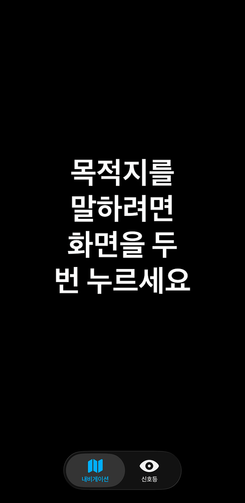
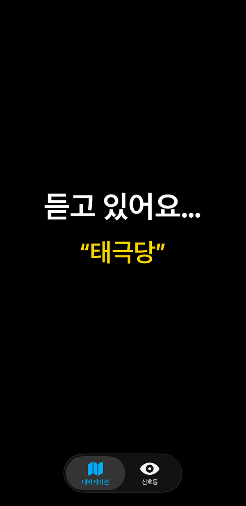
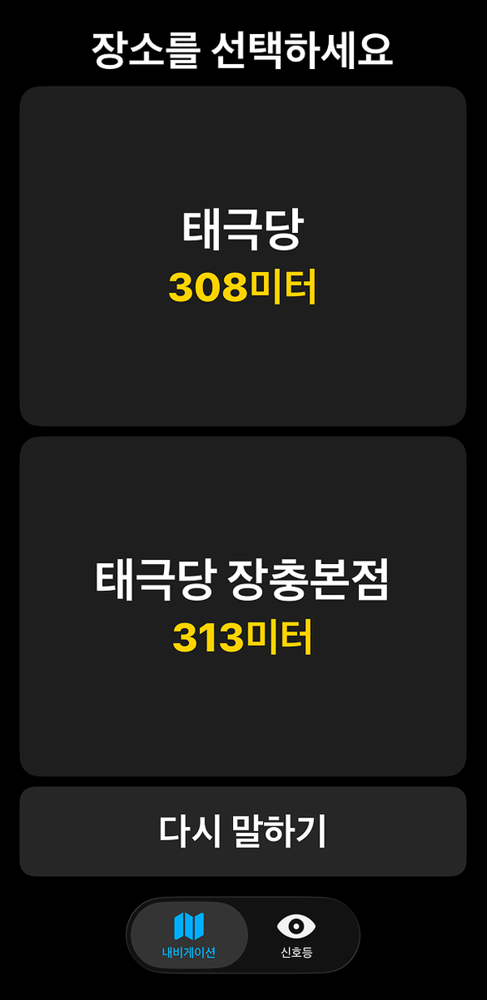
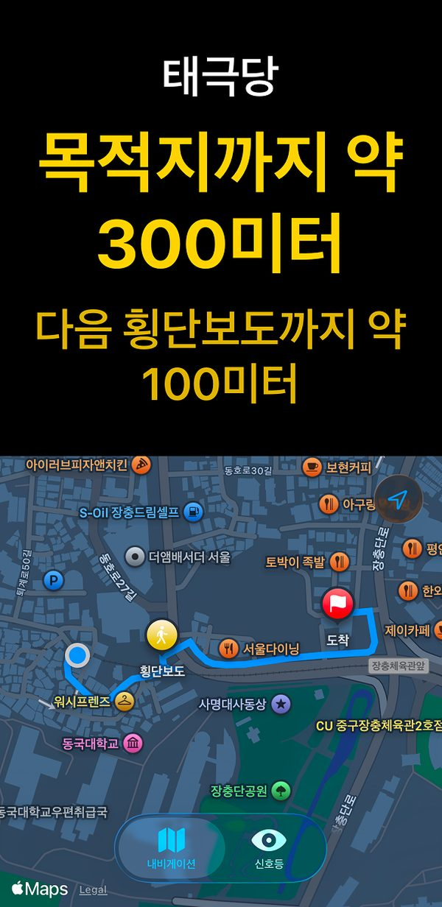
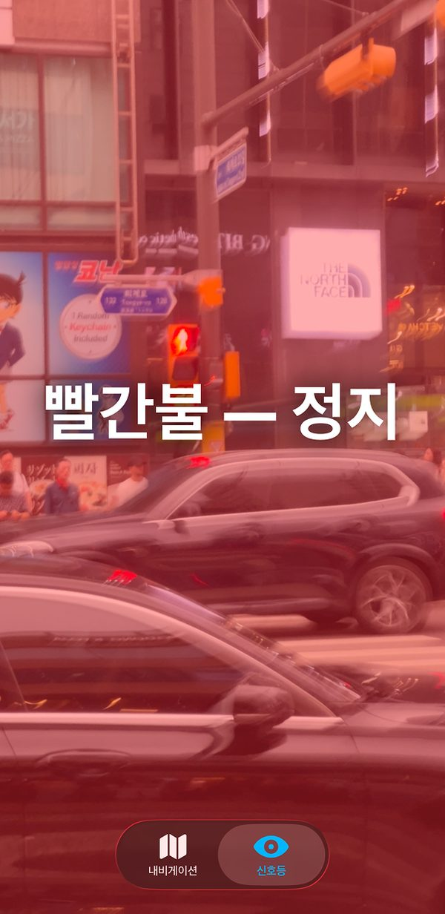

혼자 걷는다는 것
국내 시각장애인은 약 24만 7천 명입니다. 이들이 혼자 길을 나설 때 마주하는 문제는 크게 두 가지입니다.
혼자 보행하는 시각장애인이 주 1회 이상 길을 잃는 비율
길을 잃은 뒤 다시 경로로 돌아오는 일이 특히 어렵습니다.
조사 대상 공공시설 중 음향신호기가 설치되지 않은 비율
음향신호기가 없는 횡단보도에서는 신호가 언제 바뀌는지 알 수 없는 상태로 길을 건너야 합니다.
기존 서비스들은 주변 환경 설명이나 길 안내 중 한쪽만 제공합니다. SafeWalk는 두 가지를 하나의 앱에서, 별도 장비 없이 이미 가지고 있는 스마트폰만으로 해결하려 합니다.
출처
- 등록장애인 현황 — 보건복지부, 「2024년 등록장애인 263만 1천 명, 전체 인구 대비 5.1%」(2025)
- 길 잃음 경험 — 장영건·차주현, 「시각장애인용 길안내 서비스 시스템에 대한 연구」, 『재활복지공학회논문지』 11(4), 2017
- 음향신호기 설치 실태 — 한국시각장애인연합회, 전국 시·도 및 시·군·구청 등 337개 대상시설 보행접근성 조사(2023)
무엇을 하는 앱인가요
음성으로 목적지 입력
화면을 보지 않고 말로 목적지를 정합니다.
보행 경로 음성 안내
가야 할 방향과 남은 거리를 알려주고, 경로에서 벗어나면 바로 바로잡아 줍니다.
신호등 인식
카메라로 보행 신호등을 찾아 색을 안내하고, 어느 방향으로 카메라를 들어야 하는지도 함께 알려줍니다.
앱 화면 미리보기
목적지를 말하면 경로를 안내하고, 횡단보도에서는 신호등 색을 읽어 줍니다.





개발 현황
현재 베타 버전으로 실제 시각장애인 사용자와 함께 테스트하고 있습니다. iOS 버전은 2026년 10월 출시를 준비하고 있습니다.
아래 버튼으로 베타 테스트에 참여하실 수 있습니다.
안전 고지
SafeWalk는 보행을 돕는 보조 도구이며, 흰지팡이와 안내견을 대체하지 않습니다.
앱의 안내가 항상 정확하지는 않으며, 최종 판단은 언제나 사용자에게 있습니다.
만든 사람들
- 이도윤팀장, 프로젝트 총괄 및 유지보수
- 김민성프로그램 개발 및 유지보수
- 김수영프로그램 개발 및 인터뷰
- 이지민iOS 앱 개발 · 홈페이지 관리
이 프로젝트는 서울미래인재재단 서울임팩트프로젝트에 선정되어 지원받고 있습니다.
함께 만들어가고 있습니다
SafeWalk는 실제 시각장애인 사용자의 의견을 반영해 만들고 있습니다. 앱에 대한 의견을 들려주실 분, 베타 테스트 참여를 문의하실 분은 이메일로 연락 주세요.
safewalkseoul@gmail.com